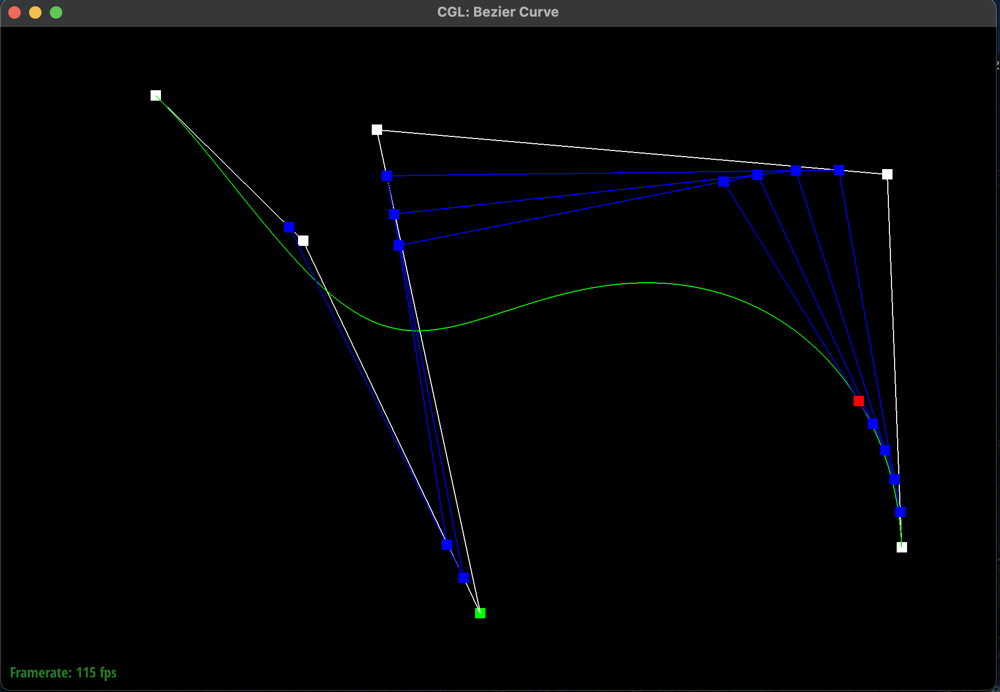
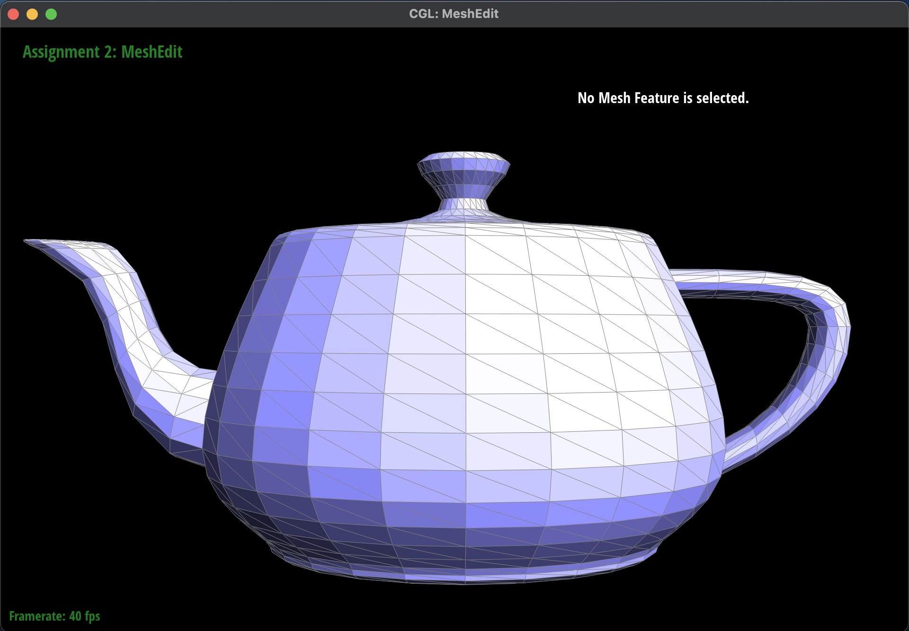
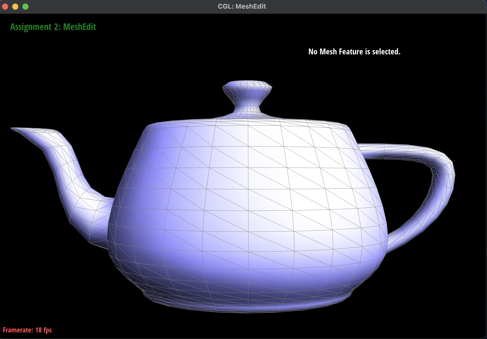

CS 184: Computer Graphics and Imaging, Spring 2024
Ian Dong
Overview
In this homework, I explored the world of mesh editing through building Bezier curves and surfaces using the
de Casteljau algorithm and implementing various mesh operations such as area-weighted vertex normals, edge
flip, edge split, and loop subdivision.
Section I: Bezier Curves and Surfaces
Part 1: Bezier Curves with 1D de Casteljau Subdivision
Briefly explain de Casteljau's algorithm and how you implemented it in order to evaluate Bezier curves.
-
de Casteljau's Algorithm takes in a set of control points and a parameter
t, a
proportion
of length along the line and evaluates a
Bezier curve by recursively interpolating between each pair of control points. It can repeat this
process until the criterion has been met or that the final interpolated point has been calculated.
By
adjusting this parameter t, it can find all the points along the
curve. I implemented
this
algorithm by looping through each point and its adjacent point, \(p_i\) and \(p_{i+1}\), and
computing the interpolated point \(p_i^{'} = \text{lerp}(p_i, p_{i + 1}, t) = (1 - t) p_i + t p_{i +
1}\). After each iteration, there will be one fewer control point than the previous iteration. This
process can be repeated until there is only one point left, which would be the final evaluated point.
Take a look at the provided .bzc files and create your own Bezier
curve with 6 control
points of your choosing. Use this Bezier curve for your screenshots below.
-
Here is a Bezier curve with 6 control points of my choosing:
Show screenshots of each step / level of the evaluation from the original control points down to the final
evaluated point. Press
E to step through. Toggle
C to show the completed Bezier curve
as well.
-
Here are the screenshots of each step of the evaluation from the original control points down to the
final evaluated point as well as the completed Bezier curve:
|
Step 0
|
Step 1
|
 Step 2
Step 2
|
Step 3
|
|
Step 4
|
Step 5
|
 Completed Bezier Curve
Completed Bezier Curve
|
Show a screenshot of a slightly different Bezier curve by moving the original control points around and
modifying the parameter \(t\) via mouse scrolling.
-
I had shifted \(t\) to a higher value which meant that the curve was more towards the right. I also
moved the control points around to create a different curve. Here is a screenshot of a slightly
different Bezier curve by moving the original control points around
and modifying the parameter \(t\) via mouse scrolling:
|
Original Completed Bezier Curve
|

Modified Completed Bezier Curve
|
Part 2: Bezier Surfaces with Separable 1D de Casteljau
Briefly explain how de Casteljau algorithm extends to Bezier surfaces and how you implemented it in order to
evaluate Bezier surfaces.
-
A 3D Bezier surface is an \(n \times n\) grid of control points where there are \(n\) parallel
Bezier
curves in \(u\). The separable 1D de Casteljau's algorithm can evaluate the surface position
corresponding to \(u, v\) along an axis \(x\) and an orthogonal axis \(y\). This algorithm extends
by
first finding the final interpolated point \(u\) at each of these \(n\) Bezier curves. Each of these
points combined will help make up a new set of \(n\) control points for the "moving" Bezier curve.
Finally, the 1D de
Casteljau's algorithm can evaluate \(v\) on this final curve. I implemented this algorithm by
first evaluating the \(n\) parallel Bezier curves in \(u\) and storing them into a new
vector. The resulting \(n\) points became my next set of control
pointers for another
Bezier curve in \(v\). This process repeats until the final point is
evaluated.
Show a screenshot of
bez/teapot.bez (not
dae) evaluated by your implementation.
-
Here is a screenshot of
bez/teapot.bez evaluated by my
implementation of the Bezier
surface:
 Bezier Surface of a Teapot
Bezier Surface of a Teapot
|
Section II: Triangle Meshes and Half-Edge Data Structure
Part 3: Area-Weighted Vertex Normals
Briefly explain how you implemented the area-weighted vertex normals.
-
I implemented the area-weighted vertex normals by making a constant iterator of the half-edge data
structure to traverse over all of the
neighboring triangles and weighting each one by its area. I defined a
find_area
function
that used the cross product formula of the vertices to find the area of the triangle.
Here are the
formal steps I took to
implement the area-weighted vertex normals:
-
I initialized an empty
Vertex3D vertex to keep track of
the weighted vertex.
-
I found the starting half-edge and used a
do-while loop
to traverse through all
the
triangles and stopping once we reached the original initial half-edge.
-
For each triangle, I calculated the area of the triangle using the cross product formula.
This
function found all three vertices of the triangle by using the
next and
vertex methods. I then found the difference vectors and
took the cross product
before normalizing the result and dividing by 2 because the area of a triangle is half the
area
of the parallelogram formed by the vectors.
-
I used this calculated area to weight the normal of the triangle and added it to the
weighted
vertex from earlier.
-
I called on the
twin().next() to find the next half-edge
and face.
-
Finally, once all of the half-edges have been traversed, I normalized the weighted vertex by
calling
unit() on it.
Show screenshots of
dae/teapot.dae (not
.bez) comparing
teapot shading with and
without vertex normals. Use
Q to toggle default flat shading and Phong shading.
-
Here are some screenshots of
dae/teapot.dae shading with and
without vertex normals:
|

Mesh without Vertex Normals
|

Mesh with Phong Shading
|
|
No Mesh without Vertex Normals
|
 No Mesh with Phong Shading
No Mesh with Phong Shading
|
Part 4: Edge Flip
Briefly explain how you implemented the edge flip operation and describe any interesting implementation /
debugging tricks you have used.
-
I first started by creating a diagram of each of the half-edges, edges, vertices and faces before
and
after the flip to ensure that the pointers would be correct. Here is the diagram shown below:
|
Before and After Flip Diagram
|
-
Here are the formal steps I took to implement the edge flip operation:
-
First, I checked if
e0->isBoundary() was true to make sure to
never
flip a boundary edge and simply returned if it was.
-
Then, I defined the inner and outer half-edges of the two triangles using the
twin() and next()
methods. Each of these half-edges corresponded
to
the 10 half-edges, h0 ... h9, as shown in the diagram
above.
-
Next, I defined the vertices of the two triangles using the
vertex() method on
the
appropriate half-edge. Each of these vertices corresponded to the 4 vertices,
v0 ... v3, as shown in the diagram above.
-
Afterwards, I defined the edges and faces of the two triangles using the
edge()
and
face() methods on the appropriate half-edge. Each of
these edges and faces
corresponded to the 5 edges, e0 ... e4, and 2 faces,
f0, f1, as
shown
in
the diagram above.
-
Then, I updated each of the 10 half-edge pointers using the
setNeighbors()
method
according to the diagram above.
-
Finally, I reassigned the half-edge pointers for each of the 4 vertices, 5 edges, and 2
faces
according to the diagram above and returned the newly updated
e0.
Some tricks I used was to follow my diagram very closely and checking which pointers I was passing
into
my functions as well as using the additional debugging utilities provided in the spec.
Show screenshots of the teapot before and after some edge flips.
-
Here are some screenshots of
dae/teapot.dae before and after some edge flips.
|
Before Edge Flips
|
 After Edge Flips
After Edge Flips
|
Write about your eventful debugging journey, if you have experienced one.
-
In the process of implementing the edge flip operation, I ran into some issues where the mesh would
look
a bit distorted and that edges would disappear after the flip. I realized that in my diagram of the
half-edge data structure, I had not taken into account the half-edge pointers for the edges on the
outside of the current mesh element. As a result, I went back to my implementation and made sure to
redraw the half-edge data structure to include the outer edges and vertices and correctly updated
the
pointers. Afterwards, the mesh looked much better after each of the edge flips.
-
Here is the incorrect half-edge flip:
 Incorrect Edge Flip: Edge Disappearance
Incorrect Edge Flip: Edge Disappearance
|
Part 5: Edge Split
Briefly explain how you implemented the edge split operation and describe any interesting implementation
/
debugging tricks you have used.
-
I first started by creating a diagram of each of the half-edges, edges, vertices and faces before
and
after the flip to ensure that the pointers would be correct. I color coded with red being the new
half-edges, edges, vertices, and faces created and black being the older counterparts. Here is the
diagram shown below:
|
Before and After Split Diagram
|
-
Here are the formal steps I took to implement the edge split operation.
-
First, I checked if
e0->isBoundary() was true to make sure to not
split a boundary edge and simply returned if it was.
-
Then, I defined the inner and outer half-edges of the two triangles using the
twin() and next()
methods. Each of these half-edges corresponded
to
the 10 half-edges, h0 ... h9, as shown in the diagram
above.
-
Next, I defined the vertices of the two triangles using the
vertex() method on
the
appropriate half-edge. Each of these vertices corresponded to the 4 vertices,
v0 ... v3, as shown in the diagram above.
-
Afterwards, I defined the edges and faces of the two triangles using the
edge()
and
face() methods on the appropriate half-edge. Each of
these edges and faces
corresponded to the 5 edges, e0 ... e4, and 2 faces,
f0, f1, as
shown
in
the diagram above.
-
In addition, I created 6 new half-edges, 3 new edges, 1 new vertex, and 2 new faces. The new
vertex is defined as the center of the edge that is being split while the 2 new faces are
the 2 bottom triangles that are created from the split.
-
Then, I updated each of the 16 half-edge pointers using the
setNeighbors()
method
according to the diagram above.
-
Finally, I reassigned the half-edge pointers for each of the 5 vertices, 8 edges, and 4
faces
according to the diagram above and returned the newly updated
e0.
Some tricks I used was to follow my diagram very closely and checking which pointers I was passing
into
my functions as well as using the additional debugging utilities provided in the spec.
Show screenshots of a mesh before and after some edge splits.
-
Here are some screenshots of
dae/teapot.dae before and after some
edge flips.
|
Before Edge Splits
|
 After Edge Splits
After Edge Splits
|
Show screenshots of a mesh before and after a combination of both edge splits and edge flips.
-
Here are some screenshots of
dae/teapot.dae before and after some
edge flips.
|
Before Edge Flips and Splits
|
After Edge Flips and Splits
|
Write about your eventful debugging journey, if you have experienced one.
-
Learning from my mistakes, I made sure to draw the diagram correctly and to follow it very closely
when I was assigning the pointers for each half-edge and the other edges, vertices, and faces. The
only issue I ran into was that sometimes when I clicked on an edge or vertex the program would crash
and this was because of a segmentation fault. After a while of debugging by rereading my code and my
diagram, I realized I had forgot to set on the edge and vertex pointers for the newly updated ones.
Then another issue occurred where one of the triangles would turn black and after debugging for a
bit I realized I had set the incorrect vertex for one of the newly created half-edge.
-
Here is the incorrect half-edge split:
|
Incorrect Edge Split: Black Triangle
|
Extra Credit: If you have implemented support for boundary edges, show screenshots of your implementation
properly
handling split operations on boundary edges.
-
Here are some screenshots of the
dae/beetle.dae that depict
before and after splitting the boundary edges:
|
Before Boundary Edge Split
|
After Boundary Edge Split
|
Part 6: Loop Subdivision for Mesh Upsampling
Briefly explain how you implemented the loop subdivision and describe any interesting implementation /
debugging tricks you have used.
I decided to follow the order of operations as described in the spec. Here are the formal steps I took
to implement the loop subdivision:
-
First, I iterated through all of the vertices in mesh using a
for
loop over the
mesh.verticesBegin() and mesh.verticesEnd()
iterators. For each vertex, I
found all of the neighbors that were connected to it and then computed the new position by weighting
it as the sum following the formula from lecture. I then set the vertex->newPosition to
this weighted position and the vertex->isNew to false because this was not
a newly created vertex.
-
Next, I iterated through all of the edges in the mesh using a
for
loop over the
mesh.EdgesBegin() and mesh.EdgesEnd() iterators. For each edge, I found
the vertex and face that it was connected to and then computed the new position by weighting it as
the sum following the formula from lecture. I then set the e->newPosition to this
weighted position and the e->isNew to false because this was not a newly
created edge.
-
Then, I iterated through all of these edges in the original mesh again in order to split each of
them and updated their position to be that of the previously computed new position stored in the
edge.
-
Afterwards, I iterated through all the edges in the mesh and flipped any of the newly created edges
that connected an old and new vertex.
-
Finally, I iterated through all of the vertices to set their position to the previously computed new
position stored in the vertex.
Take some notes, as well as some screenshots, of your observations on how meshes behave after loop
subdivision. What happens to sharp corners and edges? Can you reduce this effect by pre-splitting some
edges?
-
Here are some screenshots of applying subdivision to the icosehedron mesh:
|
Original Icosehedron Mesh
|
Icosehedron Mesh Upsampled 1 Time
|
|
Icosehedron Mesh Upsampled 2 Times
|
Icosehedron Mesh Upsampled 3 Times
|
|
Icosehedron Mesh Upsampled 4 Times
|
Icosehedron Mesh Upsampled 5 Times
|
-
I realized that the mesh subdivision was very similar the HW 1's supersampling to reduce aliasing
and jaggies. The above meshes showed an analogous effect where after each subdivision performance
the mesh would become smoother and more rounded. The sharp corners and edges would become less
pronounced and the mesh would become more rounded. I realized that this effect could be reduced by
pre-splitting some edges because the edge splits will create new vertices which will be used to
update the positions of the existing vertices diagrammed in the implementation of the loop
subdivision. Afterwards, each vertex has a higher degrees so the distorting effect when the mesh is
upsampled will be reduced. Thus, the new vertices will be located at the corners of the mesh while
the existing vertices will be located at the center of the mesh and will lead to a more rounded mesh
but preserved corners and edges.
Load dae/cube.dae. Perform several iterations of loop subdivision on the cube. Notice that the cube
becomes
slightly asymmetric after repeated subdivisions. Can you pre-process the cube with edge flips and splits
so
that the cube subdivides symmetrically? Document these effects and explain why they occur. Also explain
how
your pre-processing helps alleviate the effects.
-
Here are some screenshots of applying subdivision to the cube mesh:
|
Original Cube Mesh
|
Cube Mesh Upsampled 1 Time
|
|
Cube Mesh Upsampled 2 Times
|
Cube Mesh Upsampled 3 Times
|
|
Cube Mesh Upsampled 4 Times
|
Cube Mesh Upsampled 5 Times
|
-
The asymmetery of the cube occurs because of the asymmetric original mesh. Before, the cube mesh has
a single mesh edge that is shared by 2 of the vertices. Since the vertices are updated based on the
weighting of the neighbors, the 2 connected ones will remain closer to their original positions and
thus the cube looks stretched along the diagonal that is not originally connected.
-
Here are some screenshots of applying subdivision to the cube mesh after pre-processing:
|
Preprocessed Cube Mesh
|
Symmetric Cube Mesh Upsampled 1 Time
|
|
Symmetric Cube Mesh Upsampled 2 Times
|
Symmetric Cube Mesh Upsampled 3 Times
|
|
Symmetric Cube Mesh Upsampled 4 Times
|
Symmetric Cube Mesh Upsampled 5 Times
|
-
Thus, to make sure that each vertex has the same degree, I preprocessed the
cube by splitting the diagonal edge on every single face. This alleviates the asymmetric effect
because each vertex will be weighted equally when it is calculating the new vertex position as the
mesh is being upsampled. I did not need to flip nor split any edges after the mesh is upsampled and
thus is a valid preprocessing.
If you have implemented any extra credit extensions, explain what you did and document how they work
with
screenshots.
I did not implement any extra credit extensions.